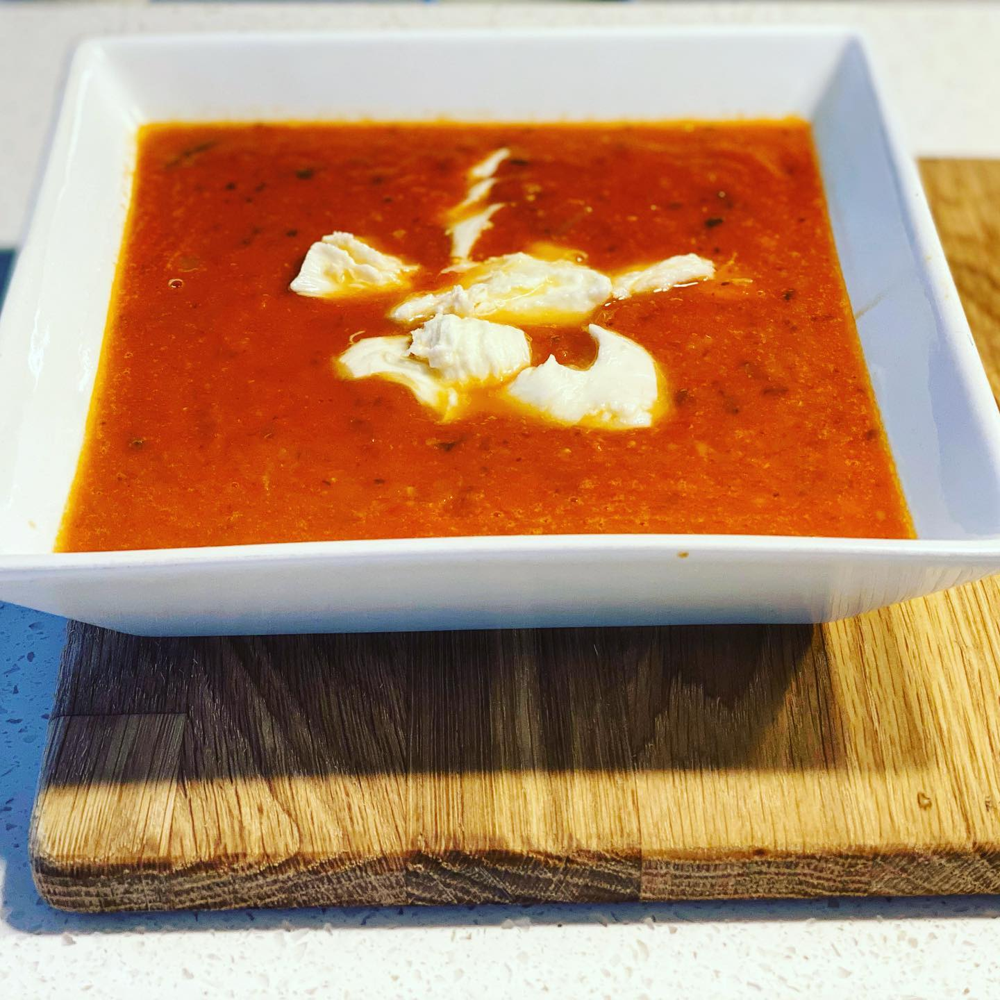

Zimná polievka podľa @cojediazdravedeti — Normy Jedál
Z mojich namrazenych rajčín plus pretlak, čerstvý koriander, cesnak, škorica a trosku curry powder ( garam masala ) Povaríte a mixnete- mozzarellu pridáme natrhanú až na tanieri 👨🍳👌💜 #zimnapolievka #vsadesamazelenina #cojediazdravedeti #skoricavpolievke